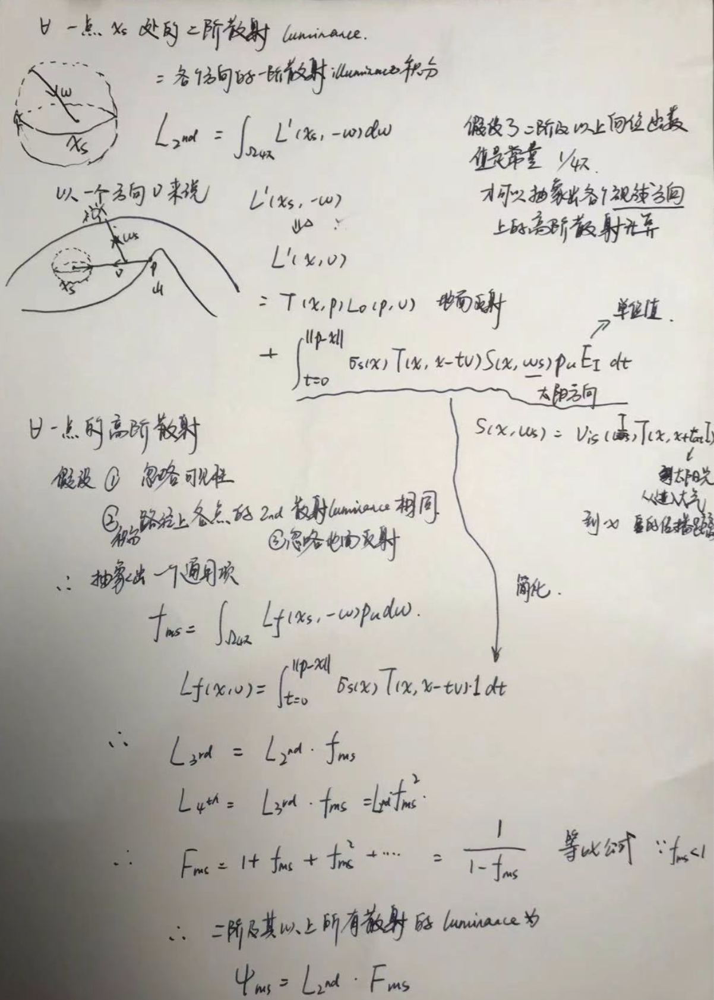

multi-scattering计算的一些思考
从遇到的线上崩溃说起
背景
最近新的赛季上线，有一部分低端配置的玩家报上来说切换了选角界面之后游戏崩溃。万幸的是，有一个同事的笔记本(NVIDIA 750M)可以必现这个问题。后来在复现的过程中发现，切换选角界面再回到游戏中时，大气的效果变了。。于是大概确定是我之前做的大气的锅。我本地调试时发现每次切换选角界面，因为一些配置的缘故，都会切换到我实现的的Bruenton17年的那版算法，可是在我的机器上却并不会崩溃，而且根据玩家的反馈看，只有部分低端机器会有崩溃现象。 于是只能把同事的笔记本“强行征用”，通过增加日志和二分排除pass法等手段，最后发现崩溃就是发生在切换算法时，会重新进行新的预计算(一帧完成)，而预计算如果的multi-scattering迭代超过3阶，GPU计算时间过长，CPU端以为GPU“有问题”了，于是出于保护强行崩溃了。
error: DXGI_ERROR_DEVICE_REMOVED DXGI_ERROR_DEVICE_HUNG
总结得出以下：
- 以后写了新的功能但并不希望pipeline跑到的时候，配置要十分注意
- precompute的multi-scattering很消耗性能，对于低配机来说，如果强行一帧算完，会导致崩溃
于是乎眼下要做的就是优化precompute的性能。忽而想起之前看的UE4的paper有对multi-scattering的简化，于是又翻出来看了看。
UE4 新的大气渲染做的multi-scattering简化
UE4的A Scalable and Production ReadySky and Atmosphere Rendering Technique中基于一定的假设对multi-scattering的计算进行了简化，使得不再需要进行高阶的迭代得到一个比较好的结果。 推导过程如下：  ps: 写了个错别字，相位函数。。
{kind=link}
优化的方案
总结以上，而且我们游戏目前还是基于地球环境的近地面居多，想到了两种优化方案：
- 还是用precompute的multi-scattering迭代计算方法，但是分帧计算，这个方法已经在同事的笔记本上试过，可行，但可能有个短暂的预计算时间。
- 用UE4 paper中的简化计算方法，但做一些改变，即生成一张multi-scattering LUT，在之前precompute的二阶 scattering计算的最后，计算出无穷阶的scattering结果，累加到single scattering上。下周可以实现下这个方案，看下大气的效果如何
const float3 r = MultiScatAs1; const float3 SumOfAllMultiScatteringEventsContribution = 1.0f / (1.0 - r);- 预计算multi-scattering transfer的时候只计算 MultiScatAs1
- Bruenton17 在第二阶multi scattering的第一步 compute the delta_scattering_density_texture的时候 * 1.0f / (1.0 - r)
- 采样multi-scattering transfer贴图的时候，u是太阳的天顶角cos值，v是相机离地面高度